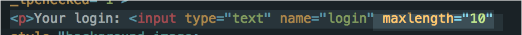

Security Assessment of Not Foursquare
Introduction
I am a security consultant. My job involves looking for chinks in the armor of a seemingly well-developed web app to ensure that everything is safe and secure for client use.
The application I am reviewing today is "Not Foursquare", a webpage that takes in a user's login information, their location info (latitude and longitude), and saves this information to a database. It then posts this information to its home page for other users to see.
Methodology
To test this application, I first became a client and performed some "black box testing". I tried several test inputs in the form: these inputs included a normal valid login and location, stress testing the form queries (it wouldn't allow anything over ten digits), and leaving certain queries empty. The application caught all of the empty form cases and printed out an error message.
Next, I looked through the raw code in server-vuln.js. This was for me to get a general idea of what the application was supposed to accomplish and how exactly it did it, including exclusive get and post routes. After looking through the code in the server, I downloaded entry.html and performed some "white box" testing. I also used the cURL --data tool to inject my own query parameters.
Lastly, I used the HTML code of the home page to look at the attacks that other people did to get some ideas of my own. I then took advantage of these insecurities, of which I will describe below in the "Issues Found" section.
Abstract of Findings
The main problem with this application was putting too much trust into the client's input. Because there was only very superficial server side validation, anyone could modify the character count of the form and inject malicious code into the application. These insecurities render the application unsafe for unsuspecting clients to use.
ISSUE #1: Cross Site Scripting (XSS) pt. 1: database injection through '/sendLocation'
* Location: post route '/sendLocation' in servervuln.js. Affects the GET API.
* Severity: HIGH!
Sending deserialized JSON has the potential to bypass all security measures and obtain sensitive data about the client.
Description of Issue
Cross Site Scripting, or XSS, occurs when malicious code is injected directly into an application. There were two instances of XSS in this application.
The first instance of cross site scripting I found with this application occured in the POST route for '/sendLocation'. The input to /sendLocation does not come from a form, like the input for the POST route to '/submit', but still has the potential for significant damage.
Proof of Vulnerability
I was able to send data through cURL on my command line:
curl --data "login=LMAAAAAO&lat=21&lng=12" https://jordan-marsh.herokuapp.com/sendLocation
Which I could then turn into a bash script, running an infinite loop that just kept sending in login information:
If I let this run long enough, I could potentially crash the entire database, which I ended up doing in ISSUE #3 down below.
The above shows you that database injection IS possible, straight from the command line. However, the more severe issue comes from when I was also able to send JSON successfully into the database through curl:
curl -d @test.json -H 'Content-Type: application/json' https://jordan-marsh.herokuapp.com/sendLocation
test.json looked like:
The vulnerability is found here in the server, at the GET '/checkins.json' route:
In this application's case, the login information is not validated to ensure they are strings. In 'GET /checkins.json''s case, using deserialized JSON in a "find" situation will always result in the statement evaluating to true. In mongoDB, the "$gt": "" condition is always true, and doing a collection.find({login:{"$gt":""}}) action will always return results.
Resolution
One way to prevent this sort of database injection is to ensure that the login fields are evaluated to ensure that they are strings, for example:
var loginEntry = request.query.login; if (typeof loginEntry === 'string' || loginEntry instanceof String) {//do something…} else {//do something else...}.
If that can be accomplished, client data is well on its way to be better protected.
ISSUE #2: Insecure Input Restrictions
* Location: conducted client-side at entry.html.
* Severity: HIGH!
Often times, this simple flaw leads to several other more severe issues. Lax security on input could result in hackers injecting malicious Javascript code directly into the application.
Description of Issue
The thing is, when you give users the freedom to input whatever they want, you're transferring an absurd amount of power to their fingertips. You can never trust client input, and you can never, ever assume that they have everyone else's best interests at heart. Wherever there is user input, there are potentially dangerous consequences.
Proof of Vulnerability
This web application tried to block this issue by having their form only take 10 characters maximum for the "login", "longitude", and "latitude" boxes. However, I was easily able to download the HTML page to my desktop and modify the "maxlength" variable. Anyone could tack on a few extra zeroes to give them enough room for whatever malicious code they wished to inject, and that's exactly what I did.

to...

Resolution
To solve this issue, it is highly recommended that the server validate whatever the client inputs. More on this is in the "Resolution" section below in ISSUE #3.
ISSUE #3: Cross Site Scripting (XSS) pt. 2: Injecting Harmful Javascript Through a Form
* Location: post route '/submit' in servervuln.js. Conducted client-side at entry.html. Affects the GET '/' route.
* Severity: HIGH!
XSS with Javascript can result in malicious code affecting everyone who has ever used the application, including actions like extracting sensitive private information of a client, crashing the server, and destroying an entire database.
Description of Issue
This was the second instance of XSS I found in this application. After modifying the character count in the HTML form file, I noticed that there was very little server-side validation as to what to post. While the "lat" and "lng" fields had to be floats, the "login" field was the most vulnerable - all it had to do was exist.
Proof of Vulnerability
Because I was able to modify the character count variable so easily, I could pretty much enter whatever I wanted into the "login" box. I started out by putting in straight HTML...
...and writing a script that did absolutely whatever I wanted it to. I ended up pasting in a script that changed the current window to the "Hackerman Hacks Time" Youtube video, which is pretty harmless and annoying in this context, but could have drastic implications to an experienced hacker with the wrong motivations.
Then, just to be fun (and most likely to my classmate's annoyance), I tried putting in an infinite loop as a query:
<script> var a = 0; while(true) { a++;} </script>
...
...and that resulted in the page completely crashing.
Lastly, I went all out and tried to target the server itself. Here is what I sent:
<script>
while (true) {
var req = new XMLHttpRequest();
var data = {"login": "lol", "lat":"1", "lng":"1"};
req.open("POST", data, true);
req.send();
}
</script>
Basically, the goal was to send requests to the server on an infinite loop. That way, the MongoDB database could be overloaded. This is what happened:

ISSUES #2 and #3: What Went Wrong Here?
Because the form is client-side, any modifications to the character count in entry.html don't affect the server. When harmful Javascript code is submitted, it makes its way to the server, where it is then added to a database in the '/submit' POST route. The GET request then fetches this information and adds it to the HTML code in the home page. When it executes, the <script> tag is recognized and executed as code. My harmful infinite loop sent the server spiraling out of control, continually receiving POST requests, and the page was not able to load fully at all, as it was never able to finish running my script.
ISSUES #2 and #3: Recommended Solution
So, how do developers protect against lax input validation client-side and the likely resulting XSS? One way of doing it is to validate input server side. So far, all there is server side is the assurance that the inputs to all the fields are not undefined, and the inputs to "longitude" and "latitude" are floats. A way to remedy this would be to nip XSS in the bud and substitute HTML special characters like the angle brackets '<' and '>' with their HTML entities < and >. One can accomplish this through something like:
var replaceMe = req.query.login; replaceMe.replace(/</g,'<').replace(/>/g,'>').replace(/&/g,'&');
The better the server side is at checking input before putting anything into any database and affecting other pages on an application, the more secure the application is. It's like making a friend. Make sure they aren't a serial killer before letting them into your house.
Conclusion
This application had two instances of cross site scripting, one of which attacked the database and the other which tried its best to mutilate the server. Furthermore, relaxed input restriction that was not backed-up server side made it even simpler to further the attacks.
It's important for developers to understand just how easy it is to hack into a seemingly secure application and wreak absolute havoc. It's equally important for developers to realize that not all clients have good intentions, and that sometimes the most destructive, privacy-defying actions can come from within the database itself. It is best to take even the smallest of precautions to make the application as impenetrable as possible.